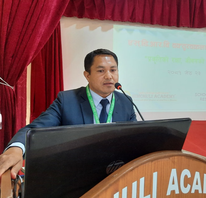

Himchuli Academy
Welcome to Himchuli Academy: Where Excellence Meets Opportunity
At Himchuli Academy, we believe in nurturing young minds to become future leaders. Located in a serene environment with state-of-the-art facilities, our academy provides an education that balances academics, extracurricular activities, and life skills development. Whether your child is just starting their educational journey or preparing for higher studies, Himchuli Academy ensures that they are equipped with the tools they need to succeed.
Why Choose Himchuli Academy?
Quality Education: Our experienced faculty members are dedicated to providing personalized and rigorous academic instruction to each student. With a curriculum designed to foster critical thinking, creativity, and problem-solving, your child will be prepared for a rapidly changing world.
Holistic Development: We believe education is more than just textbooks. At Himchuli Academy, we offer a variety of extracurricular activities including sports, arts, music, and leadership programs to help students discover and hone their talents outside the classroom.
Safe and Inspiring Environment: Our modern campus features comfortable classrooms, well-equipped science labs, libraries, and recreational spaces. We ensure that each student feels safe, supported, and inspired to grow.